海洋科学基础课程
浙江大学知识外脑
赤道潜流（EUC）—— 形成原理与气候影响
介绍视频
一、基本定位
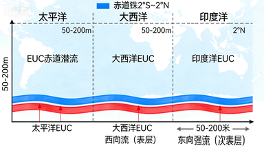
赤道潜流（Equatorial Undercurrent, EUC）是全球大洋赤道区域特有的大尺度次表层强流。
- 位置：严格沿赤道（约 2°S～2°N）
- 深度：核心位于温跃层附近，50～200 m
- 流向：自西向东
- 特点：流速强、流轴窄、厚度薄、与表层流向相反
- 典型代表：太平洋赤道潜流最强、最完整，大西洋、印度洋也存在。
二、形成原理（深度动力学解释）
赤道潜流并非由风直接驱动，而是风生强迫、压力梯度、赤道科氏力特性、层结与位涡约束共同作用的结果，是赤道动力学最典型的产物。
1. 信风造成海面西高东低，建立向东的压力梯度
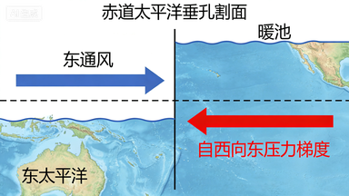
- 赤道地区常年受偏东信风控制：
- 风将表层海水持续向西输运
- 海水在西太平洋堆积，海面抬高，形成暖池
- 东太平洋海面相对较低
- 最终形成跨洋盆的东西向压力梯度，方向自西向东。
- 这是赤道潜流的动力来源。
2. 赤道 f ≈ 0，地转平衡失效，流体可沿赤道强加速
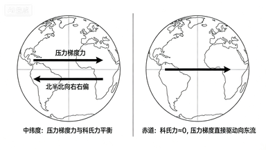
- 常规海域中，压力梯度会被科氏力平衡，形成地转流。但在赤道上：
- f=2Ωsinφ≈0
- 科氏力几乎为零，流体无法通过南北偏转平衡压力梯度。
- 于是，压力梯度直接驱动水体沿赤道向东加速，形成强射流。
3. 质量守恒与次表层回流结构
- 信风使表层水持续向西流动，必须存在次表层向东回流以满足质量守恒。
- 赤道潜流就是这支回流通道。
4. β 效应与位涡守恒，将流束 "束缚" 在赤道附近
- 由于科氏力随纬度变化（β 效应），加上海洋强层结抑制垂向运动，水流在运动中保持位涡守恒，无法大幅南北扩散。
- 最终形成：
- 窄而强的射流结构
- 严格贴赤道分布
- 被限制在温跃层内
5. 层结作用：流速核心集中于温跃层
- 温跃层内密度垂向梯度大，垂向运动受抑制，水平流动更易增强。
- 因此潜流核心恰好位于温跃层，呈现 "表层西向、次表层东向" 的典型垂直结构。
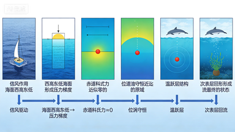
三、一句话总结形成机制
信风在赤道西太平洋造成海面抬升，形成自西向东的压力梯度；赤道科氏力近似为零，压力梯度无法被地转平衡，从而驱动水体沿赤道向东加速；在层结与位涡约束下，形成一支窄强、贴赤道、位于温跃层内的东向次表层强流，即赤道潜流。
四、主要影响（科学与气候意义）
赤道潜流不仅是一个动力现象，更是全球气候系统的关键环节。
1. 维持赤道环流的质量、动量、热量平衡
- 平衡表层西向流，构成赤道环流闭合系统
- 参与跨洋盆热量再分配
- 调节赤道温盐结构
2. 控制温跃层深度，直接影响 ENSO 发生发展
- 这是其最重要气候意义：
- 潜流东传过程中，会抬升或下压温跃层
- 温跃层深度变化直接控制冷海水上涌强度
- 进而影响海表温度异常，决定厄尔尼诺 / 拉尼娜的爆发与演变
- 可以说：没有赤道潜流，ENSO 动力学结构将完全不同。
3. 影响赤道上升流与生态系统
- 潜流与地形、边界相互作用可激发次级上升流 / 下降流
- 改变营养盐垂向输送
- 影响赤道海域生产力、渔场分布
4. 验证海洋动力学与数值模式
- 赤道潜流对动力学参数、层结、风场极为敏感，是：
- 检验赤道海洋理论的标准试金石
- 评估海洋数值模式可靠性的重要指标
5. 影响淡水、化学要素输运
- 潜流横贯洋盆，可输运：
- 淡水通量
- 溶解氧、营养盐
- 碳、痕量气体
- 对赤道生物地球化学循环有重要调控作用。
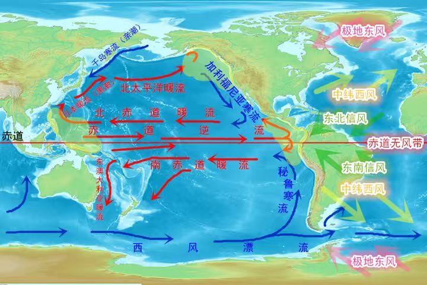
五、高度精炼总结
赤道潜流是赤道温跃层内一支沿赤道自西向东的次表层强流。其形成源于信风导致海面西高东低所产生的向东压力梯度，在赤道科氏力近似为零的特殊动力学环境下，压力梯度无法被地转平衡，驱动水体沿赤道加速东流，并在层结与位涡约束下形成窄强射流。赤道潜流通过调控温跃层深度、热输送与上升流强度，深刻影响赤道环流结构与海气相互作用，是 ENSO 等气候事件形成与演变的关键动力机制，同时对海洋物质输运、生态环境及数值模式验证具有重要科学意义。
出门票
马宇翔的出门票
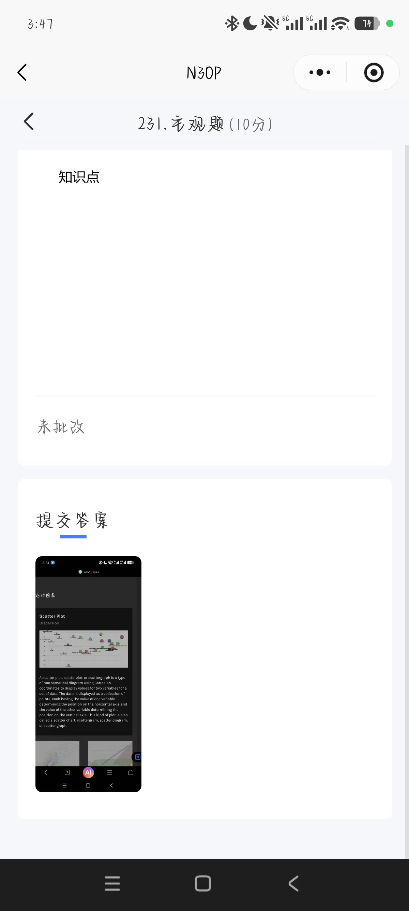
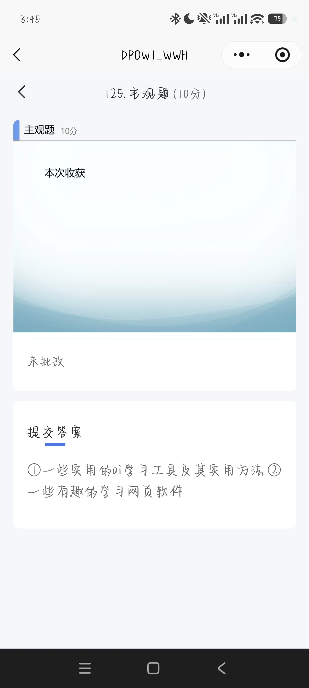
叶如涛的出门票
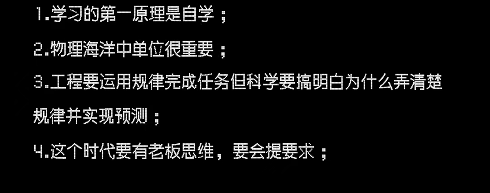
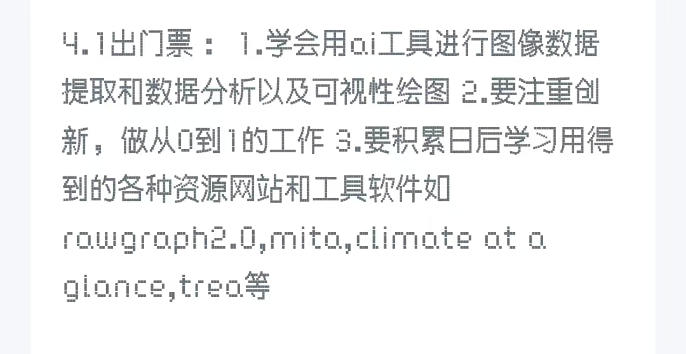
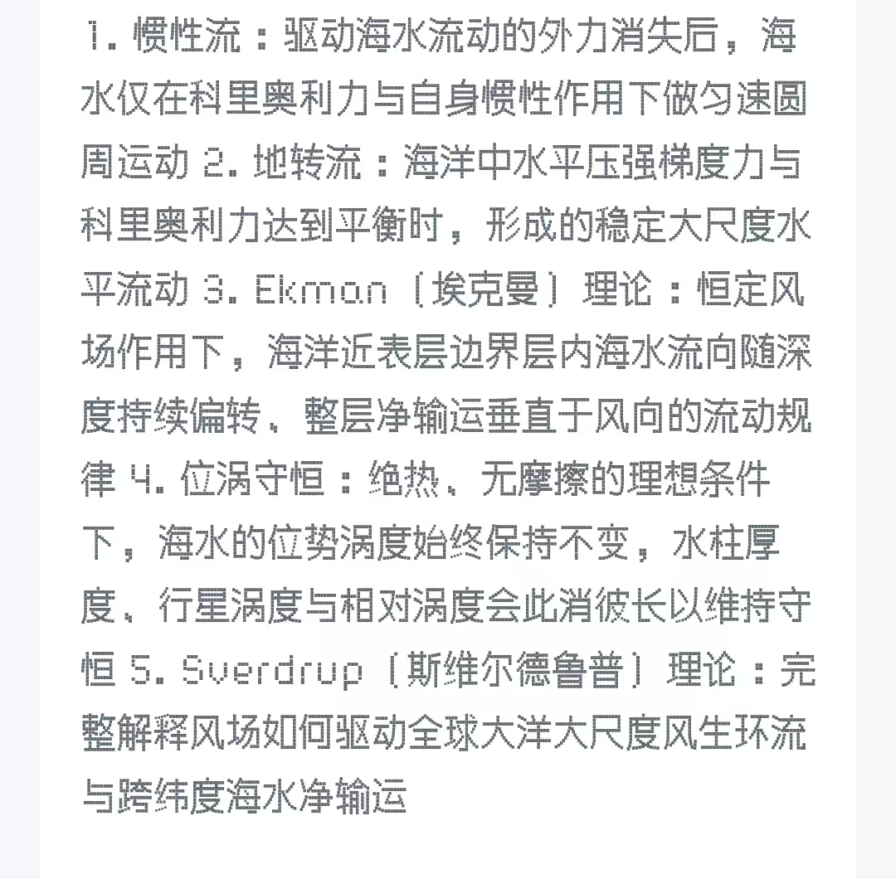
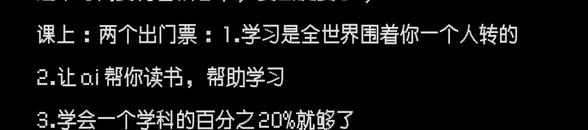
有用的网站资源
资源获取网站
这些网站提供丰富的实时数据、历史观测记录及气候分析工具，适合海洋研究、教学和项目分析。
NOAA（美国国家海洋与大气管理局）
全球领先的海洋和气象数据提供者，拥有海温、海流、海平面、海冰等多维度数据。
使用示例：获取全球海表温度（SST）数据，分析厄尔尼诺现象期间太平洋中部海温的异常变化。
Earth Nullschool（实时风场与海流模拟）
提供全球实时的风场和海流可视化，数据来源于ECMWF和NOAA等权威机构。
使用示例：观察北赤道流和南赤道流的流速与路径变化，分析其在不同季风期间的强弱转换。
Climate at a Glance（气候概览）
提供全球气候要素的历史趋势查询，适合快速获取气象与海洋的宏观概况。
使用示例：查询某海域的年度海温变化，用于支持海洋变暖或渔业资源变化的研究。
绘图网站
适合将获取的数据进行直观的可视化展示，帮助科研成果的解读与交流。
AI辅助工具
这些工具可以用于数据处理、文本生成或图像识别，提升科研效率。
物理海洋学教材总结
第1章 描述性物理海洋学导论
1.1 核心框架
本章定义物理海洋学的学科范畴、研究尺度、守恒定律基础与观测历史，建立描述性与动力学双主线体系，是全书的逻辑起点。
1.2 学科定义与研究范畴
1. 学科定位
- 描述性物理海洋学：以观测 + 数据 + 模式输出定量描述海水运动与结构，侧重大尺度、长期、平均态。
- 动力学物理海洋学：以理论 + 数值试验解释运动机制，侧重力平衡、稳定性、波动。
- 本书主线：以描述为主，嵌入动力学解释，聚焦开放大洋大尺度，兼顾近岸。
2. 研究内容
- 海水热力学（温、盐、密、压、热焓）
- 海水运动（环流、波动、潮汐、湍流、混合）
- 海气相互作用、水团形成与输运、气候系统耦合
3. 学科意义
- 海洋是地球最大热储库，调控全球气候与季节变化。
- 调控 ENSO、季风、海平面变化、极端天气。
- 支撑航海、渔业、海岸工程、防灾减灾（海啸、风暴潮）。
1.3 观测发展与数据体系
1. 观测史关键节点
- 1855 Maury：首次系统整理洋流资料
- 1872–1876 挑战者号：首次环球海洋综合科考
- 1925–1927 流星号：首次大规模物理海洋学观测
- 1960–1970 锚定潜标 + 卫星遥感
- 2000 至今 Argo 剖面浮标：全球实时温盐剖面
2. 数据类型
- 现场观测：CTD、采水器、ADCP、锚定潜标
- 卫星：SST、高度计、海冰、散射计、水色
- 再分析数据：同化观测与模式结果
1.4 时空尺度与无量纲数（核心）
1. 空间尺度
- 微尺度：mm–cm（分子混合、微结构）
- 小尺度：m–100m（表面波、毛细波、内波）
- 中尺度：10–100km（涡旋、锋面、流环）
- 大尺度：1000–10000km（海盆环流、热盐环流）
2. 时间尺度
- 秒–分钟：波浪、湍流
- 小时–天：潮汐、惯性流、内波
- 天–周：中尺度涡旋演变
- 季–年：季节循环、年际变率（ENSO）
- 百年–千年：热盐环流、古气候
3. 核心无量纲参数
- 罗斯比数 Ro：旋转效应强弱
- Ro << 1：大尺度，地转平衡主导
- Ro >> 1：小尺度，旋转可忽略
- 纵横比：垂向尺度 / 水平尺度 << 1，水平运动远强于垂向
- 埃克曼数 Ek：耗散/旋转，表征边界层
- 雷诺数 Re：惯性/粘性，判断湍流
1.5 基本守恒定律（全书基础）
- 质量守恒 → 连续方程
- 盐量守恒 → 盐收支方程
- 热量守恒 → 热收支方程
- 动量守恒 → 运动方程
- 位涡守恒 → 大尺度环流定向机制
第2章 海洋尺度、形态与海底地形
2.1 核心框架
本章从几何尺度、板块构造、地形单元、底质四方面，建立海洋环流的边界条件与地形约束，是环流结构的物理基础。
2.2 全球海洋基本尺度
1. 海陆分布
- 地球表面 71% 为海洋，29% 为陆地。
- 南半球水:陆 = 4:1；北半球 1.5:1。
- 海洋总面积：3.61×10⁸ km²，平均深度 ≈ 3682–4000m。
2. 大洋划分
- 太平洋：最大，占 46%，呈椭圆形，环太平洋俯冲带
- 大西洋：S 形，中央大西洋脊扩张
- 印度洋：北半球封闭，无高纬冷水形成
- 南大洋：唯一环绕地球，无纬向陆地阻挡
- 北冰洋：陆架极宽，中央海岭分割
3. 关键尺度特征
- 最大深度：马里亚纳海沟 11034m
- 84% 海底深度 > 2000m
- 水平尺度 5000–15000km，垂向仅 4km，呈极薄流体层
2.3 板块构造与海底地形
1. 全球大洋中脊
- 全长 > 40000km，地球最长地形
- 海底扩张中心，新洋壳生成地
- 控制深层水输送与混合路径
2. 断裂带
- 垂直于洋脊，是深层水穿越洋脊的唯一通道
- 典型：罗曼什断裂带、赤道大西洋断裂带
3. 海沟
- 俯冲带形成，深度 6000–11000m
- 太平洋最多，控制西边界流路径
4. 海山与平顶海山（Guyot）
- 影响流轴、涡旋稳定性、波浪折射
- 密集海山区可阻挡/引导深层流
2.4 海底地形单元（完整体系）
1. 大陆边缘
- 大陆架：平均宽度 65km，深度 <130m，渔业与沉积中心
- 大陆坡：坡度陡，发育海底峡谷
- 大陆隆：浊流堆积形成
- 深海平原：最平坦地形，沉积覆盖强
2. 边缘海
- 地中海型：蒸发 > 降水，高盐流出
- 黑海型：降水 > 蒸发，低盐流出
- 典型：加勒比海、日本海、白令海、波罗的海
3. 海槛（Sill）
- 盆地间浅水脊，控制水交换密度门槛
- 决定深层水能否进入盆地
2.5 海底底质与沉积
1. 陆源沉积
- 陆架/陆坡：砂、粉砂、泥，来自河流与风成
2. 深海沉积
- 红黏土：陆源风尘、火山灰
- 钙质软泥：浮游生物钙质壳体
- 硅质软泥：硅藻、放射虫，高营养区
3. 沉积速率
- 0.1–10 mm/千年
- 记录古温度、盐度、季风、火山活动
第3章 海水物理性质
3.1 核心框架
本章是全书物理基础，系统讲解水分子特性、压强、温度、盐度、密度、静力稳定度、声光电、海冰，是水团分析、环流动力学的前提。
3.2 水分子特性
1. 极性分子
- 强溶解能力 → 海水高盐
- 高比热容 → 海洋巨大热惯性
- 高潜热（蒸发/凝结）→ 海气热量交换核心
- 高表面张力 → 支持毛细波、风应力界面
2. 密度异常
- 淡水：最大密度在 4℃
- 海水：盐度抑制分子链结构，最大密度点 = 冰点（≈-1.9℃）
3.3 压强
1. 静水平衡
- ∂p/∂z = −ρg，垂向压强梯度完全平衡重力
- 1 dbar ≈ 1 m 水深
2. 水平压强梯度
- 驱动水平洋流
- 大尺度运动中，水平压强梯度与科氏力平衡 → 地转流
3.4 温度与位温
1. 位温 θ
- 定义：水块绝热移至海面的温度
- 消除压缩升温，是水团对比唯一正确温度
- 原位温度 T > θ，深海差异可达 0.5–1℃
2. 观测
- 逆转温度计 → 热敏电阻 → 卫星 SST
- 卫星精度 ~0.5℃，现场 CTD 精度 0.001℃
3.5 盐度
1. 实用盐度标度 PSS78
- 由电导率测定，无单位，平均约 35.00
- 盐度误差：电导法 ±0.001，滴定法 ±0.02
2. 恒定比例定律
- 主要离子比例全球一致
- 总浓度由蒸发、降水、径流、结冰排盐决定
3.6 密度与状态方程（最核心）
1. 密度控制因子
- 温度（主导）> 盐度 > 压强
- 高纬地区盐度贡献显著增强
2. 位密 σθ
- 消除压强影响，用于水团追踪
- σ₀（0dbar）、σ₁（1000dbar）、σ₂（2000dbar）、σ₃（3000dbar）
- 必须使用局部位密避免虚假密度倒转
3. 关键非线性效应
- Cabbeling（卷缩）：同密度不同温盐水混合后密度增大
- 热盐压缩差异：冷水比暖水更易压缩
- 决定深层水垂向分布
3.7 静力稳定度与浮力频率
1. 稳定度 E
- E > 0：稳定层结，抑制垂直运动
- E < 0：对流不稳定，发生垂直混合
2. 布伦特–维萨拉频率 N
- N² = gE，表征层结强弱
- N 大 → 内波易生成、混合弱
- N 小 → 易对流、混合强
3.8 海冰物理
1. 结冰排盐
- 冰晶排斥盐分 → 下层海水增密下沉
- 是南极底层水、挪威海深层水的核心来源
2. 反照率正反馈
- 冰/雪反照率 0.6–0.9
- 开阔水反照率 0.1–0.15
- 冰减少 → 吸热增多 → 冰更少（极地放大）
3. 热隔绝
- 1m 海冰几乎完全阻断海气热交换
- 冰间湖（Polynya）是极区热交换核心
3.9 声波与光学
1. 声速
- 依赖：温度 > 压强 > 盐度
- SOFAR 声道：声速极小值层，远程声传播通道
2. 光学
- 蓝光穿透最深（>100m）
- 叶绿素吸收红光 → 卫星水色反演生物量
- 真光层深度：浮游植物光合作用上限
第4章 海水特性典型分布
4.1 核心框架
本章以温、盐、密、氧、营养盐的全球分布为主线，建立垂直层结 + 水平分布 + 水团分类完整体系，是环流诊断的直接依据。
4.2 垂直结构（三层经典模型）
1. 混合层
- 风搅拌 + 表面浮力强迫 → 垂直均匀
- 夏季：几米–几十米
- 冬季：可达几百米，强对流区 >1000m
2. 跃层
- 温跃层：温度快速下降
- 盐跃层：盐度快速变化
- 密跃层：密度快速增加（最稳定）
- 低纬全年存在；高纬季节性或缺失
3. 深层均匀层
- 温盐变化极小，缓慢流动
- 由高纬下沉水充填
4.3 温度分布
1. 海表温度 SST
- 赤道 >28℃，极地 ≈-1.8℃
- 西边界流暖舌显著（湾流、黑潮）
- 赤道东太平洋冷舌（上升流）
2. 垂直分布
- 热带/副热带：上暖下冷，强温跃层
- 高纬：冷中间层（dichothermal），上覆暖水，下接暖深层（mesothermal）
- 稳定由盐度分层维持
3. 季节变化
- 夏季：浅混合层 + 季节性温跃层
- 冬季：深混合层，温跃层消失
4.4 盐度分布
1. 海表盐度
- 副热带高压区最高（蒸发 > 降水）
- 赤道与副极地最低（降水/融冰 > 蒸发）
- 大西洋 > 印度洋 > 太平洋
2. 垂直分布
- 副热带：表层高盐 → 中层极小 → 深层较高
- 高纬：表层低盐 → 强盐跃层 → 深层高盐
- 盐度主导高纬层结稳定
4.5 密度与层结
1. 位密垂向分布
- 必须单调递增，否则不稳定
- 跃层对应密度快速增加
- 深层密度梯度微弱
2. 模态水/滞温层（Pycnostad）
- 垂直均一温盐水层
- 冬季深混合层下沉形成
- 是水团最显著标志
4.6 全球水团体系（完整分类）
1. 上层水团
- 中央水：副热带跃层水，绝热下沉
- 模态水：均一温盐层
- 亚热带水下水：次表层盐极大
2. 中层水团
- 南极中层水 AAIW：低盐，全球分布
- 北太平洋中层水 NPIW：低盐
- 拉布拉多海水 LSW：低盐、高氧
- 地中海水、红海水：高盐、高温
3. 深层水团
- 北大西洋深层水 NADW：高盐、高氧、低温
- 太平洋深层水、印度洋深层水：低盐、低氧、年老
4. 底层水团
- 南极底层水 AABW：最冷、最密、最年轻
- 覆盖全球海底
4.7 溶解氧与营养盐
1. 溶解氧
- 表层：饱和（光合作用 + 海气交换）
- 次表层：氧极小值（细菌分解耗氧）
- 深层：高氧 = 水团年轻
2. 营养盐
- 表层：低（浮游植物消耗）
- 深层：高（分解再生）
- 与氧呈镜像分布
4.8 水团年龄、通风与周转
1. 年龄
- 水块最后一次在海面的时间
- 示踪剂：CFCs、¹⁴C、³He、氚
2. 通风
- 表层水下沉进入海洋内部
- 强通风区：副极地、西边界流区、冰架区
3. 周转时间
- 上层：几十年
- 深层：几百年
- 太平洋 > 印度洋 > 大西洋
第5章 质量、盐度和热量收支与风强迫
5.1 核心框架
本章核心是海洋的守恒定律（质量、盐度、热量守恒）与海气界面通量过程，建立了海洋环流与海气相互作用的定量关系，是物理海洋学的能量与物质循环基础。
5.2 热量守恒与海气界面热收支
1. 热收支方程
海洋表层的净热通量满足：Qnet = Qs - Qb - Qe - Qh
- Qs：入射短波辐射，海洋唯一的净得热项，受纬度、云量、海冰反照率调控，热带最高，随纬度升高降低；
- Qb：净长波辐射，海洋失热项，由海表温度、大气水汽、云量决定，纬向变化幅度小；
- Qe：潜热通量，海洋最主要的失热项，由蒸发速率决定，公式为Qe = ρ Ce u L (qs - qa)，与风速、海气比湿差正相关，副热带下沉区最强；
- Qh：感热通量，海洋失热项，由海气温差决定，公式为Qh = ρ cp Ch u (Ts - Ta)，量级最小，仅在西边界流冬季强海气温差下显著。
2. 长波辐射的关键特征
- 海水对长波辐射几乎不透明，入射长波辐射被表层毫米级海水吸收，因此射出长波辐射仅由海表皮温决定；
- 皮温与体温度（1m内）仅在强风、强海气热通量下近似相等，通常皮温低于体温度；
- 射出长波辐射(OLR)是卫星监测热带对流、厄尔尼诺事件的核心指标。
3. 冰-反照率正反馈
- 海冰/积雪的反照率远高于开阔海水，海冰覆盖增加→反照率升高→吸收短波辐射减少→海洋降温→海冰进一步增加，是极地放大效应的核心机制；
- 海冰同时隔绝海气热量交换，1米厚海冰几乎完全阻断海洋与大气的热交换，冰间水道是极区海气热交换的核心区域。
5.3 全球热收支的空间分布与经向热输送
1. 纬向分布特征
- 热带（30°S-30°N）海洋净得热，中高纬度净失热，最大失热区集中在湾流、黑潮、阿古拉斯流等西边界流区；
- 南半球热收支各分量整体大于北半球，源于南半球海洋面积占比更高，且地球近日点对应南半球夏季。
2. 经向热输送
- 为平衡纬向热收支差异，海洋与大气共同完成低纬到高纬的经向热输送，海洋贡献约20%-30%的全球总热输送；
- 全球海洋热输送峰值为1-2PW，出现在南北纬20°-30°；
- 大西洋全海盆经向热输送均为北向，源于北大西洋副极地的强烈热损失与北大西洋深层水形成，是南北半球热输送最显著的不对称性。
5.4 浮力通量
1. 定义与驱动
浮力通量由热通量和淡水通量共同决定，改变海水密度，是温盐（热盐）环流的核心驱动力。热通量是主导项，淡水通量在高纬度、径流影响区、海冰形成区贡献显著。
2. 空间分布
- 浮力损失（密度增加）最强的区域：副热带西边界流区、北大西洋副极地海区、南极周边陆架区，对应深层水/底层水形成区；
- 浮力增益（密度降低）最强的区域：赤道东太平洋冷舌区、赤道大西洋径流影响区、东边界上升流区。
5.5 风强迫与风应力
1. 风应力与埃克曼输运
- 风应力是海洋环流的首要驱动力，大尺度风场分为热带信风带、中纬度西风带、极地东风带，具有显著的季节性；
- 埃克曼输运：北半球垂直于风应力向右，南半球向左，其辐合/辐合驱动上升流/下降流，是风驱动大洋环流的核心纽带；
- 风应力旋度决定埃克曼泵吸/抽吸：北半球正旋度→埃克曼辐散→上升流（抽吸），负旋度→埃克曼辐合→下降流（泵吸）。
2. Sverdrup平衡
大洋内区的经向输运完全由风应力旋度决定，公式为：β V = (1/ρ) k·∇×τ，是风驱动大洋环流的核心理论，解释了副热带反气旋环流、副极地气旋环流的形成机制。
3. 西向强化
大洋环流的核心特征：西边界流（湾流、黑潮）窄而强，东边界流宽而弱。物理机制为：Sverdrup内区的流动需通过西边界流闭合，西边界的侧摩擦可输入环流所需的相对涡度，而东边界无法实现，因此强边界流仅能出现在大洋西边界。
第6章 数据分析概念与观测方法
6.1 核心框架
本章介绍了物理海洋学观测数据的处理、分析与可视化方法，是海洋观测数据从原始测量到科学结论的核心方法论，涵盖统计基础、时空插值、谱分析、模态分解、水团分析五大核心模块。
6.2 观测误差与统计基础
1. 误差分类
- 系统误差（偏差）：观测值与真实值的固定偏移，源于仪器校准偏差、采样策略缺陷（如晴天偏差），无法通过多次平均消除；
- 随机误差（噪声）：观测值的随机波动，源于仪器精度、湍流随机过程，可通过多次平均降低，用标准差衡量。
- 精度：观测的可重复性，对应随机误差；准确度：观测与真实值的接近程度，对应系统误差。
2. 核心统计量
- 样本均值：x̄ = (1/N)Σxi，无偏估计真实均值；
- 方差：σ² = (1/(N-1))Σ(xi - x̄)²，衡量数据的固有变异性；
- 标准差：σ，方差的平方根，与原始数据同量纲；
- 标准误差：sε = σ/√N，衡量均值估计的不确定性，与样本量平方根成反比；
- 协方差/相关系数：衡量两个变量的线性相关性，相关系数ρx,y ∈ [-1,1]。
3. 概率密度函数(pdf)
- 描述随机变量的分布特征，由观测数据的直方图归一化得到；
- 高斯分布（正态分布）：最基础的连续分布，均值、中位数、众数重合，是中心极限定理的核心结果；
- 瑞利分布：描述风速大小等正定值随机变量的分布。
4. 自相关与自由度
- 自相关函数：描述时间序列在不同时滞下的自相关性，用于计算去相关时间尺度、积分时间尺度；
- 积分时间尺度：自相关函数的时间积分，用于计算有效自由度Ndof = T/Tint，是置信区间计算的核心参数；
- 置信区间：衡量统计估计的不确定性，95%置信区间表示真实值有95%的概率落在该区间内，由标准误差、自由度、t分布决定。
6.3 最小二乘法与客观成图
1. 最小二乘法
核心思想是最小化模型与观测值的残差平方和，是线性拟合、参数反演的核心方法，广泛应用于仪器校准、地转流参考速度反演、水团混合比例计算。
2. 客观成图
- 定义：基于最小二乘误差线性估计，将不规则空间分布的观测数据插值到规则网格的方法，是海洋数据网格化的标准手段；
- 核心要素：基于数据的空间协方差设定权重函数（通常为高斯/指数函数），可引入地转平衡等动力学约束，同时输出插值结果与误差场；
- 优势：相比简单的格点平均，可量化采样密度的影响，输出无偏的最优估计。
6.4 时间序列分析与谱方法
1. 滤波
- 低通滤波：保留低频信号，去除高频噪声，最常用的是滑动平均；
- 高通滤波：保留高频信号，去除低频趋势；
- 带通滤波：保留特定频段的信号，用于提取潮汐、惯性流等特定周期的过程；
- 核心注意事项：滤波窗口设计需避免吉布斯现象，线性相位滤波可避免信号的相位畸变。
2. 谱分析
- 核心思想：将时间序列分解为不同频率的正弦/余弦分量，量化各频率对总方差的贡献，是海洋波动、湍流分析的核心方法；
- 关键概念：
- 奈奎斯特频率：离散采样能分辨的最高频率，等于采样频率的1/2；
- 混叠：采样频率低于奈奎斯特频率时，高频信号被错误表现为低频信号，是海洋观测采样设计的核心禁忌；
- 功率谱：频率对应的信号功率，谱的峰值对应序列的优势周期；
- 谱估计需通过分段平均降低误差，置信区间由自由度与卡方分布决定。
- 频率-波数谱：同时分析信号的时间频率与空间波数特征，可验证波动的理论频散关系，分离不同类型的海洋波动。
6.5 经验正交函数(EOF)分析
1. 核心原理
将时空变化的数据集分解为正交的空间模态（EOF）与对应的时间系数（主成分），按解释方差占比从高到低排序，是高维海洋-气候数据降维、提取大尺度变异模态的核心方法。
2. 关键特征
- 各模态正交，可完全重构原始数据集；
- 前2-3个模态通常对应气候系统的主要变异型（如PDO、ENSO、SAM）；
- 可通过蒙特卡洛方法检验模态的统计显著性。
6.6 水团分析方法
1. T-S图分析
物理海洋学水团分析的经典核心工具，以位温为纵轴、盐度为横轴，可直观识别水团端元、量化混合过程，保守混合在T-S图中表现为端元间的直线段。
2. 最优多参数(OMP)分析
- 基于最小二乘法，利用多保守示踪剂（温盐、溶解氧、营养盐等）量化观测水样中各源地水团的占比，是现代水团分析的定量标准方法；
- 适用于超定系统（示踪剂数量＞水团端元数量），可引入非负约束避免非物理的负占比，输出各水团的空间分布与混合比例。
第7章 描述性海洋环流的动力过程
7.1 核心框架
本章建立了海洋环流的动力学理论体系，从流体运动的基本方程出发，逐步推导地转平衡、埃克曼理论、Sverdrup平衡、位涡守恒等核心理论，解释了大洋环流的形成机制、空间特征与动力本质，是物理海洋学的核心理论章节。
7.2 流体运动的基本方程
1. 动量方程（Navier-Stokes方程）
描述流体运动的核心方程，包含加速度、平流、科里奥利力、压力梯度力、重力、粘性力六大项，旋转坐标系下的形式为：
Du/Dt - fv = - (1/ρ)∂p/∂x + Fx
Dv/Dt + fu = - (1/ρ)∂p/∂y + Fy
Dw/Dt = - (1/ρ)∂p/∂z - g + Fz
- 物质导数D/Dt = ∂/∂t + u∂/∂x + v∂/∂y + w∂/∂z，包含局地加速度与平流项，是非线性的来源；
- 科里奥利参数f=2Ωsinφ，随纬度升高而增大，赤道为0，南北半球符号相反；
- 静力平衡：垂向动量方程可简化为∂p/∂z = -ρg，是海洋大尺度运动的核心近似，垂向加速度可完全忽略。
2. 连续方程（质量守恒）
不可压缩流体的连续方程：∂u/∂x + ∂v/∂y + ∂w/∂z = 0，是质量守恒的数学表达，联系了水平流速与垂向流速。
3. 涡粘性与涡扩散
- 分子粘性的效应在海洋大尺度运动中可忽略，湍流导致的涡粘性主导动量的垂向/水平混合，分为垂向涡粘性AV与水平涡粘性AH；
- 同理，温盐等标量的混合由涡扩散系数主导，垂向涡扩散系数κV远小于水平涡扩散系数κH；
- 全球平均垂向涡扩散系数约1×10-4m²/s，开阔大洋内部仅1×10-5m²/s，地形粗糙区因内波破碎显著增强。
7.3 地转平衡与热成风关系
1. 地转平衡
大尺度海洋环流的核心平衡态，水平科里奥利力与水平压力梯度力大小相等、方向相反，方程为：
fv = (1/ρ)∂p/∂x, fu = - (1/ρ)∂p/∂y
- 地转流方向：北半球沿等压线流动，高压在右侧；南半球高压在左侧；
- 地转流是无辐散的，可用流函数表示，流速大小与等压线的疏密成正比；
- 罗斯比数Ro=U/(fL)，衡量地转近似的适用性，大尺度环流Ro≪1，地转平衡成立。
2. 热成风关系
地转平衡与静力平衡的结合，描述地转流速的垂向剪切与水平密度梯度的关系，方程为：
f∂v/∂z = (g/ρ0)∂ρ/∂x, f∂u/∂z = - (g/ρ0)∂ρ/∂y
- 正压流：流速不随深度变化，仅由海面高度的水平梯度驱动；
- 斜压流：流速随深度变化，由等密面的倾斜驱动，海洋中大部分地转流为斜压流；
- 实用结论：北半球面向地转流下游，暖/轻水在右侧，冷/重水在左侧。
3. 地转流的动力计算
通过温盐剖面计算比容异常、动力高度，结合无运动面假设，得到地转流速的垂向分布。动力高度是地转流的流函数，其水平梯度决定地转流速大小。现代方法通过反演、数据同化优化参考面流速，替代传统的无运动面假设。
7.4 埃克曼理论
1. 埃克曼层平衡
海气界面风应力驱动的摩擦边界层，平衡关系为科里奥利力与湍流粘性力的平衡，是风应力向海洋传递动量的核心机制。
2. 核心结论
- 埃克曼螺旋：流速大小随深度指数衰减，方向随深度不断向右偏转（北半球），表层流速与风向夹角为45°（均匀涡粘性假设）；
- 埃克曼输运：埃克曼层的垂向积分输运，北半球垂直于风应力向右，南半球向左，公式为：
- UE = τy/(ρf), VE = -τx/(ρf)
- 输运大小与粘性系数无关，仅由风应力与科里奥利参数决定；
- 埃克曼泵吸/抽吸：风应力旋度导致埃克曼输运的辐合/辐散，驱动垂向速度，是风应力与大洋内区环流的核心纽带，公式为：
- wE = (1/(ρf))k·∇×τ
- 北半球正旋度→上升流（抽吸），负旋度→下降流（泵吸）。
3. 典型应用
- 赤道上升流：信风驱动赤道南北的埃克曼输运向两极辐散，冷水上涌，形成赤道冷舌；
- 沿岸上升流：沿岸风驱动离岸埃克曼输运，下层冷水上涌，是东边界流高生产力的核心成因。
7.5 位涡守恒与Sverdrup平衡
1. 位涡守恒
无粘、无外力的正压流体中，位涡Q=(ζ+f)/H守恒，是流体旋转运动的核心守恒律，解释了大洋环流的形成机制。
- 相对涡度ζ = ∂v/∂x - ∂u/∂y，衡量流体的局地旋转；
- 行星涡度f，随纬度升高而增大；
- 水柱拉伸（H增大）→相对涡度增大，水柱压缩（H减小）→相对涡度减小。
2. β效应
科里奥利参数随纬度的变化β = df/dy，是罗斯贝波的恢复力，也是大洋环流西向强化的核心成因。
3. Sverdrup平衡
大洋内区的位涡平衡，风应力旋度驱动的埃克曼垂向速度与β效应平衡，方程为：
βV = (1/ρ)k·∇×τ
- 副热带负风应力旋度驱动赤道向的Sverdrup输运，形成反气旋式副热带环流；
- 副极地正风应力旋度驱动极向的Sverdrup输运，形成气旋式副极地环流；
- Sverdrup输运从大洋东边界积分到西边界，其总量决定了西边界流的输运强度。
4. 西向强化
大洋环流的核心特征，副热带环流的西边界流窄而强，东边界流宽而弱。物理机制：Sverdrup内区的赤道向流动损失行星涡度，需通过西边界的侧摩擦输入正相对涡度，完成环流的闭合；东边界无法提供所需的涡度输入，因此无法形成强边界流。
7.6 温盐环流与深海环流
1. 深层水形成
高纬度海区的浮力损失（冷却、海冰形成的析盐）导致海水密度增大，发生对流下沉，形成深层水/底层水，核心源地为北大西洋副极地海区、南极周边陆架区。
2. Stommel-Arons深海环流理论
基于位涡守恒，深层水的局地扩散上升驱动内区极向流动，通过深层西边界流完成环流闭合，解释了各大洋西边界均存在南向深层西边界流的特征。
3. 热盐环流的闭合
深层水的上升依赖跨等密度面的湍流混合，混合的能量主要来自潮汐与内波破碎，地形粗糙区是深海混合的热点，是热盐环流闭合的核心环节。
第8章 重力波、潮汐与海岸海洋学
8.1 核心框架
本章介绍了海洋中的波动现象（表面重力波、内波、潮汐）与近岸海洋过程，是物理海洋学中中小尺度动力过程的核心内容，涵盖波动理论、潮汐动力学、近岸环流三大模块。
8.2 波动的基础理论
1. 核心参数
- 波长L：相邻波峰/波谷的距离；周期T：相邻波峰经过固定点的时间；
- 波数k=2π/L，角频率ω=2π/T；
- 相速度cp=ω/k=L/T：波峰的传播速度；
- 群速度cg=∂ω/∂k：波能量的传播速度，是波能输运的核心参数。
2. 频散关系
描述波动频率与波数的函数关系，是区分不同类型波动的核心依据。非色散波的相速度与群速度相等，色散波的相速度随波长变化。
8.3 表面重力波
1. 分类与频散关系
- 深水波（短波）：波长≪水深，频散关系ω=√(gk)，相速度cp=√(g/k)，群速度cg=cp/2，长波传播速度快于短波；
- 浅水波（长波）：波长≫水深，频散关系ω=k√(gd)，相速度与群速度相等cp=cg=√(gd)，为非色散波，传播速度仅由水深决定。
2. 风浪与涌浪
- 风浪：局地风直接驱动的海面波，波谱宽、波面粗糙，白冠显著，其发展由风速、风时、风区决定；
- 涌浪：风区外传播而来的长周期波，波谱窄、波面平滑，衰减小，可跨大洋传播数千公里；
- 有效波高：波列中最高1/3波的平均波高，是海浪预报的核心指标。
3. 波浪近岸变形与破碎
- 浅水变形：波浪向岸传播，水深变浅，波速降低，波长缩短，波高增大；
- 折射：波峰向与岸线平行的方向偏转，源于水深变化导致的波速差异；
- 破碎：波高与水深之比达到临界值时，波浪发生破碎，分为崩破波、卷破波、激散波三类，是近岸能量耗散的核心过程；
- 波浪增水：波浪破碎向岸输运水体，导致近岸平均水位升高，是风暴潮的重要组成部分。
4. 海啸
- 成因：海底地震、滑坡、火山喷发引发的超长周期重力波，波长可达数百公里，属于浅水波；
- 传播特征：大洋中传播速度可达200m/s，可跨大洋快速传播，能量衰减小；
- 近岸放大：进入陆架浅水区后，波速降低，波高急剧放大，可形成数米至数十米的巨浪，是海洋中最具破坏性的自然灾害之一。
8.4 内重力波
1. 核心特征
发生在海洋层化流体内部的重力波，恢复力为约化重力g'=gΔρ/ρ，远小于表面重力波的g，因此具有周期长、振幅大的特征，振幅可达数十米，是海洋内部混合的核心能量来源。
2. 频散关系与传播特征
- 频率范围：f≤ω≤N（f为科里奥利参数，N为布伦特-维萨拉频率）；
- 核心特性：相速度与群速度严格垂直，能量传播方向与波矢方向垂直；
- 高频内波（接近N）：波矢近水平，能量近垂直传播；低频内波（接近f）：波矢近垂直，能量近水平传播。
3. 生成与耗散
- 主要生成机制：潮汐与地形相互作用生成的内潮，风驱动的近惯性内波；
- 耗散：内波在地形、陆架区发生破碎，转化为湍流混合，是深海混合的核心能量来源，维持了大洋的温盐环流；
- Garrett-Munk谱：描述开阔大洋内波场的普适谱，是内波研究的基准。
4. 内孤立波
大振幅非线性内波，由内潮在陆架区变形生成，振幅可达百米，是陆架区混合的重要来源，可通过卫星遥感的海面粗糙度条带观测。
8.5 潮汐
1. 引潮力与平衡潮
- 引潮力：天体对地球海水的引力与地球绕地月/地日质心旋转的离心力的差值，与天体距离的三次方成反比，月球的引潮力是太阳的2.2倍；
- 平衡潮：假设地球完全被海水覆盖，引潮力导致的海面平衡形态，形成朝向和背向天体的两个潮波隆起，因此一天有两次高潮；
- 大潮与小潮：朔望日，日、月、地共线，引潮力叠加，潮差最大（大潮）；上下弦日，日、月、地垂直，引潮力抵消，潮差最小（小潮）。
2. 动态潮汐与分潮
- 实际海洋中，潮汐受大陆、地形、科里奥利力影响，形成绕无潮点旋转的旋转潮波系统，北半球逆时针旋转，南半球顺时针；
- 无潮点：潮振幅为0的点，同潮时线汇聚于此，是大洋潮汐的核心特征；
- 潮汐分潮：实际潮汐可分解为多个天文分潮，最主要的为M2（太阴半日分潮）、S2（太阳半日分潮）、K1、O1（日分潮）；
- 调和分析：通过最小二乘法拟合潮汐时间序列，得到各分潮的振幅与迟角，是潮汐预报的核心方法。
3. 潮汐的环境效应
- 潮汐混合：潮汐流与地形相互作用产生的湍流，可混合陆架水体，形成潮汐混合锋，将下层营养盐输送到真光层，支撑高生产力；
- 潮汐余流：潮汐非线性效应产生的净输运，是近岸物质输运的重要机制；
- 内潮：潮汐与地形相互作用生成的内波，是深海混合的核心能量来源。
8.6 近岸海洋过程
1. 沿岸上升流
沿岸风驱动离岸埃克曼输运，下层冷水上涌，是东边界流生态系统高生产力的核心成因，具有显著的季节性，风场反转时上升流消失。
2. 裂流
波浪破碎驱动的离岸窄急流，是近岸溺水事故的主要诱因，由沿岸流的辐合驱动，流速可达1-2m/s，宽度通常小于50m。
3. 河口与近岸环流
河口区的核心特征是盐度的层化/混合，由径流、潮汐、风共同驱动，分为高度分层型、部分混合型、充分混合型三类，是陆源物质向海洋输运的核心通道。